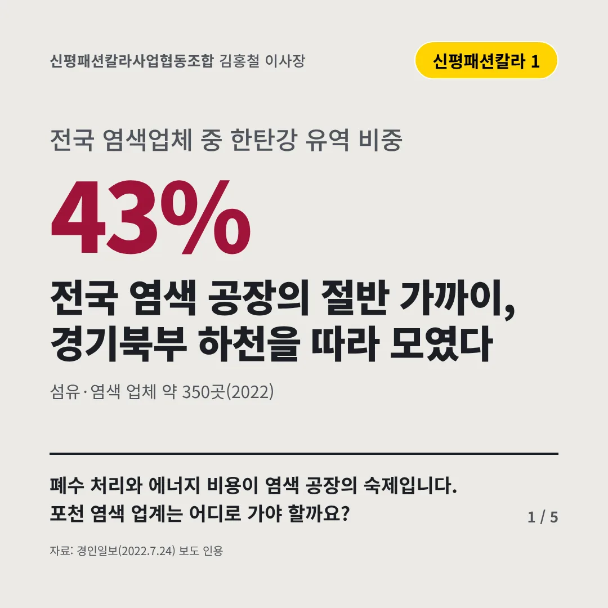
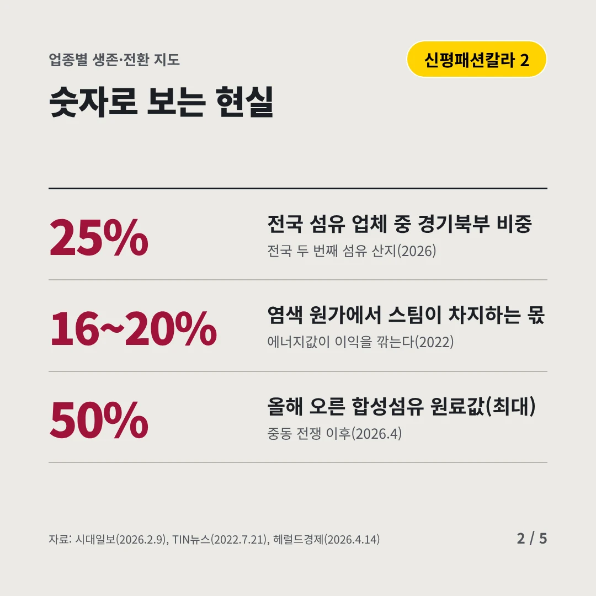
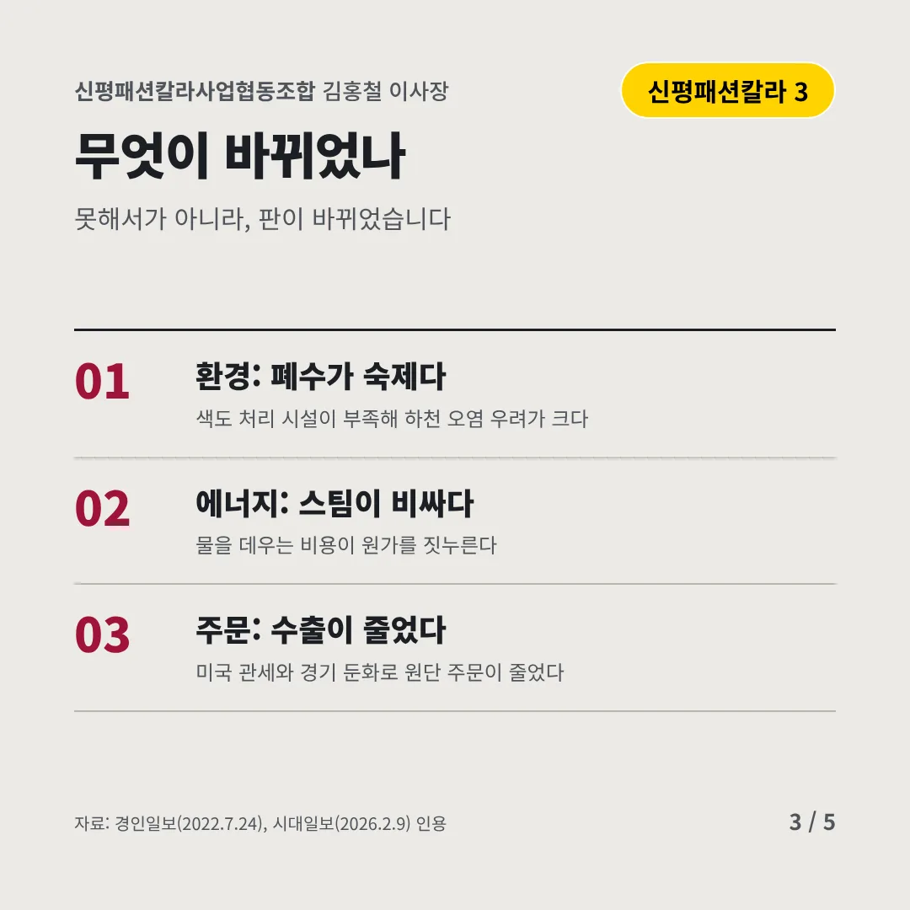
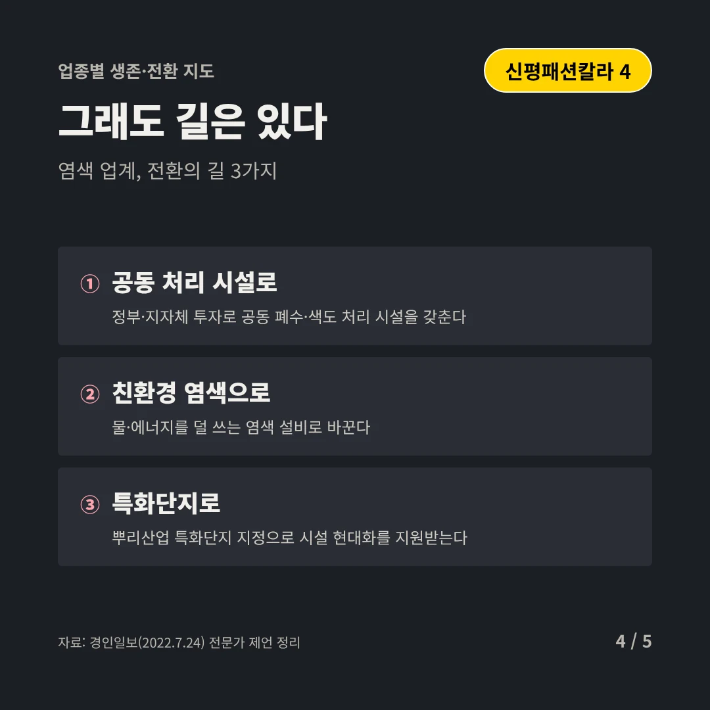
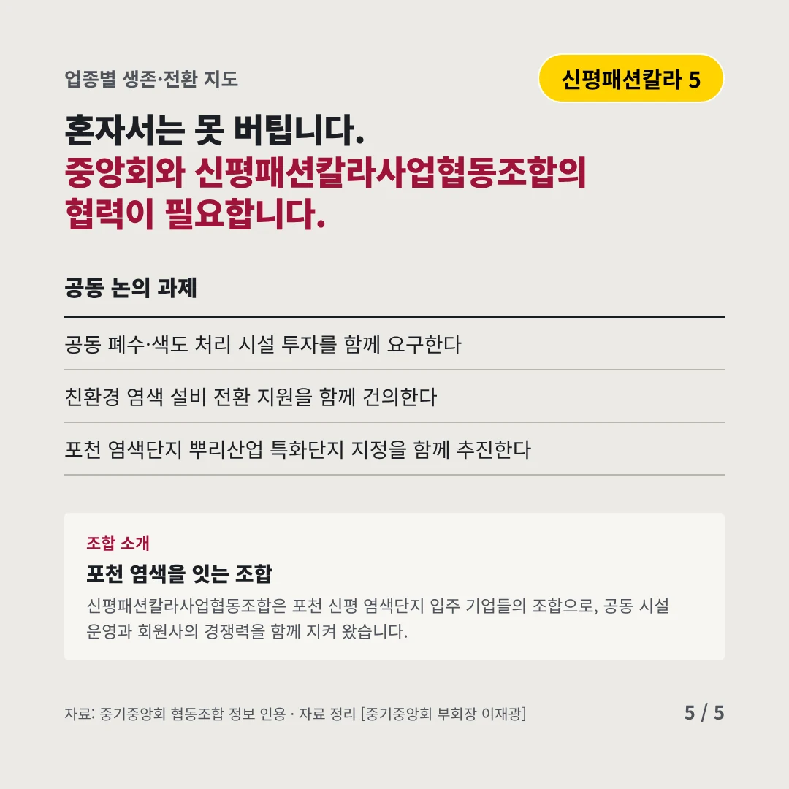
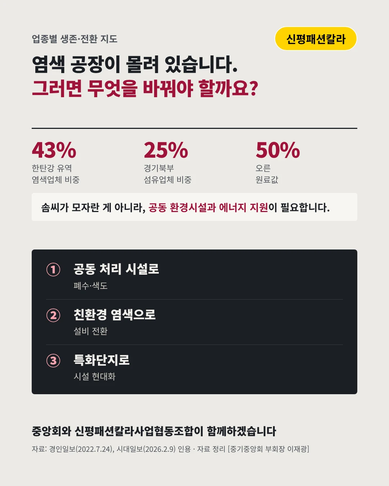

신평패션칼라사업협동조합
전국 염색 공장의 절반 가까이, 경기북부 하천을 따라 모였다
43% 전국 염색업체 중 한탄강 유역 비중






폐수 처리와 에너지 비용이 염색 공장의 숙제입니다. 포천 염색 업계는 어디로 가야 할까요?
숫자로 보는 현실
- 25%전국 섬유 업체 중 경기북부 비중전국 두 번째 섬유 산지(2026)
- 16~20%염색 원가에서 스팀이 차지하는 몫에너지값이 이익을 깎는다(2022)
- 50%올해 오른 합성섬유 원료값(최대)중동 전쟁 이후(2026.4)
무엇이 바뀌었나
- 환경: 폐수가 숙제다색도 처리 시설이 부족해 하천 오염 우려가 크다
- 에너지: 스팀이 비싸다물을 데우는 비용이 원가를 짓누른다
- 주문: 수출이 줄었다미국 관세와 경기 둔화로 원단 주문이 줄었다
그래도 길은 있다
- 공동 처리 시설로정부·지자체 투자로 공동 폐수·색도 처리 시설을 갖춘다
- 친환경 염색으로물·에너지를 덜 쓰는 염색 설비로 바꾼다
- 특화단지로뿌리산업 특화단지 지정으로 시설 현대화를 지원받는다
한 장 요약

조합 소개
신평패션칼라사업협동조합은 포천 신평 염색단지 입주 기업들의 조합으로, 공동 시설 운영과 회원사의 경쟁력을 함께 지켜 왔습니다.
자료: 경인일보(2022.7.24), 시대일보(2026.2.9), TIN뉴스(2022.7.21), 헤럴드경제(2026.4.14)